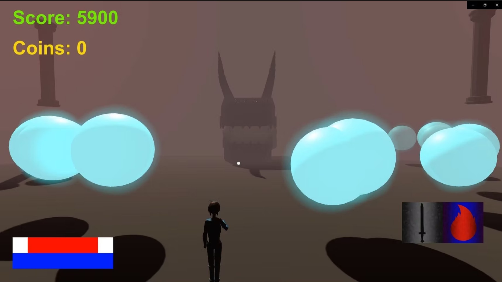

Project Description
Azure Bloodmage is a playable game project built in Unity Engine. The game features multiple levels where players navigate through challenges as a magical character. I programmed the entire game in C# and created comprehensive design documentation to guide the development process. This project taught me game development fundamentals and how to work with a professional game engine.
GitHub Repository: https://github.com/MorganGravelat/Azure_BloodMage
What I Did
- Programmed player movement and combat systems in C#
- Designed and implemented multiple game levels
- Created detailed game design documentation
- Implemented game mechanics like health, magic, and enemy AI
Skills Learned
- C# programming in Unity Engine
- Game design documentation and planning
- Object-oriented programming for game development
- Unity's component system and scene management